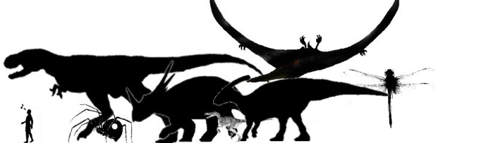
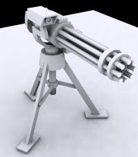

Kits and Vehicles
Kits
Energy Grapple (Turok 3)
With this device you'll be able to climb up trees and onto building
rooftops.
Night Vision Goggles (Turok 3)
We all know these. They let you see at night with a pretty green glow
and a limited field of vision.
Satchel Charges (Turok 2)
The satchel charge is a versatile piece of demolitions equipment. Place
it at the base of buildnings, in a group of vehicles, or some other
objective to, well, demolish it. Can be set for touch off detonations,
a 30 second timer, or deactivation.

Automated Sentry Turret (Turok RW)
The auto turret is a set and forget security measure. It will scan the
area with thermal sights and rip up nearby
enemies. A situationally aware opponent will take it out before he
comes within
it's range.
“I am Turok!” Health Kit
Don't be selfish, lend these health paks to your teammates. They will
thank you later. maybe. the jerks.
Tek Armor (Turok 1)
The Tek Armor will give you higher health simply put. But this extra
health can't be rehealed. Also protects against radiation.
Engineering Kit
Since non-living vehicles have been added to the bunch, the Arkane
Majick Kit became the more sensibly named Engineering Kit. It
still repairs vehiclles as one would expect. Still not sure just how
the ammo purchase and distribution system works in Soldner yet, so
we'll hold up on defining its ammo creation capabilities.
Disposable Warp Portal
Generator
When you find youself in a jam, there's one last stunt you can pull.
Whip out this trinket and create a temporary warp portal that'll
transport you to a random point in the playing are. It's risky because
you may land in an even worse spot. Plus it's one time use only, hence
the disposable part.
Architect's Kit
Even if there aren't any pre-built structures around, you don't have to
feel naked. For some extra cash and a little bit of you're time you can
make some nifty structures like watch towers, walls, pill boxes, gates,
and any other crap I can think include.
Pitfall Kit
Gauntlet
Land
Raptor Mech (Turok 1)
The rushers vehicle of choice, this raptor sprints at speeds up to
40mph. It carries a sensible plasma gun, but the pounce attack is much
more lethal.
Giant Spider (Turok 2)
The other one seater, the giant spider can't keep up with the raptor,
but it is more stealthy and allows you to use your weapon of choice
while riding it.
Parasaurolophus
This APC has a cart that tows carries 8 people
at 20-something mph. If it carries a medic all people recover health.
If it
carries a miracle man all people recover ammo. Players in the cart can
fire their weapons off the side.
Humvee (Turok 1)
The Longhunter and his men
traveled about the wilds of the Lost Land for years without
professional repair in these hummers. They are better armored and
faster than the Parasaurolophus (with a TOW missile to boot), but they
carry fewer passengers, lack the autoheal and autoammo capabilities,
and riders can't fire out the sides.
Styracosaurus (Turok 2)
Direct from Turok 2, this dino carries the big guns of herd. One player
drives the beast (which tramples over smaller beings) and fire the
artillary batteries, while the other controls the 20mm cannon.
Ankylosaurus
Of the heavy dinos this one has the shortest profile. It is equipped
with a flak cannon suited for taking down air vehicles, and also
carries two rocket pods. The large aperture of the guns makes it rather
ineffective in close ranges.
Oblivion Tank
The Flesh Eaters have just brought this new tank out of their foundries. It has a
rather unconventional weapon that shoots a stream of molten steel on a
rotating turret. Powerful but limited range and ammo amount.
Tyrannosaurus Rex (Turok 1)
Thunder somehow escaped from the Campaigner's fortress and his
mechanized ass roams around the countryside once again. But for a hefty
price he can be yours to wreak havoc on your opponents. The head is
equipped with a laser beam and fire breath. Two gunners side at the
sides. And the lucky guy at the rear sends out shockwaves with the tail.
Air
Jet Pack (Turok 1)
The jet pack adds another dimansion to infantry combat. The added
mobility makes it good for hit and run attacks. Noisy son of a gun
though, so be
prepared to attract attention.
Giant Dragonfly (Turok 1)
The giant dragonfly is the VTOL in this mod. It has a small profile and
is speedy. Useful for escorting the
Pteranodons in their bombing runs, or dogfighting with enemy air
vehicles (exact armament not determined yet)
Fokker Dr I Triplane (Turok 3)
The Red Baron's triplane has beensalvaged from the Lost Land junkard in
preparation for this new and really bizzarre war. It's slower than the
dragonfly, but makes up for it with maneuverability and rate of climb.
Mantid Gunship
Similar in many aspects to the Spectre gunship, this one is also
designed to hover around an area pelting the ground with cannon fire.
These guns are side mounted on the gunship so good cooperation between
pilot and gunners is required.
Pteranodon (Turok Evolution)
Slow, big, and loaded with things that go boom. Fly over your target
and unleash hell. Yarr! Wing surfing is fun, too.